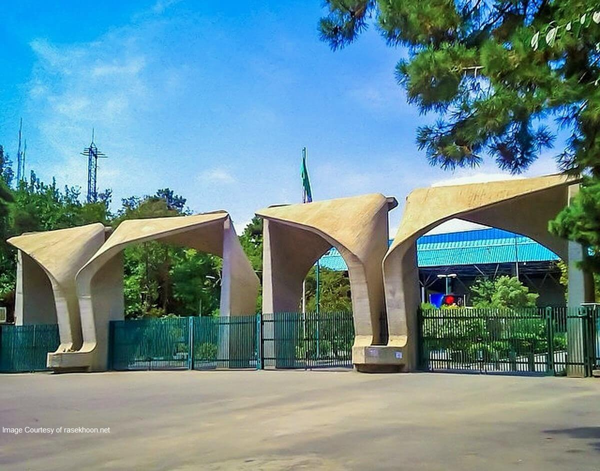
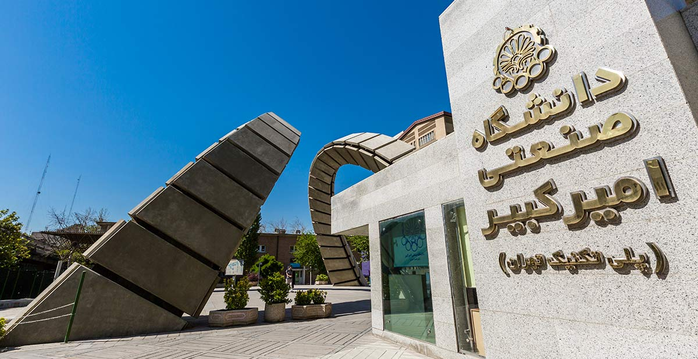
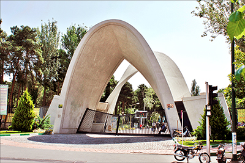
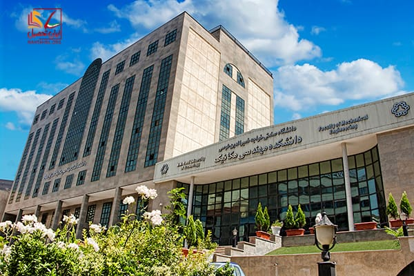
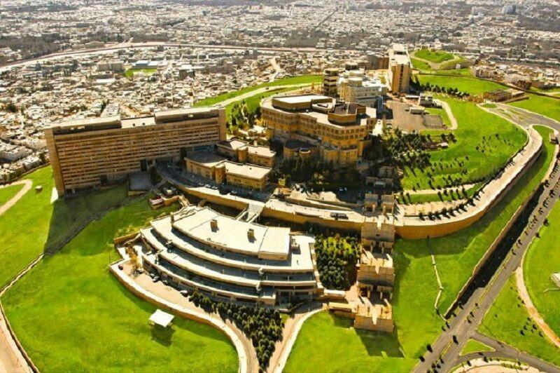
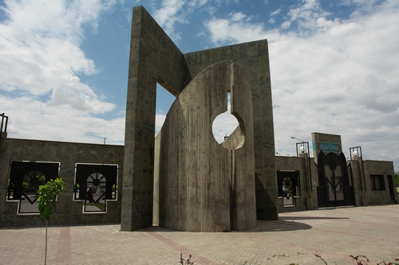
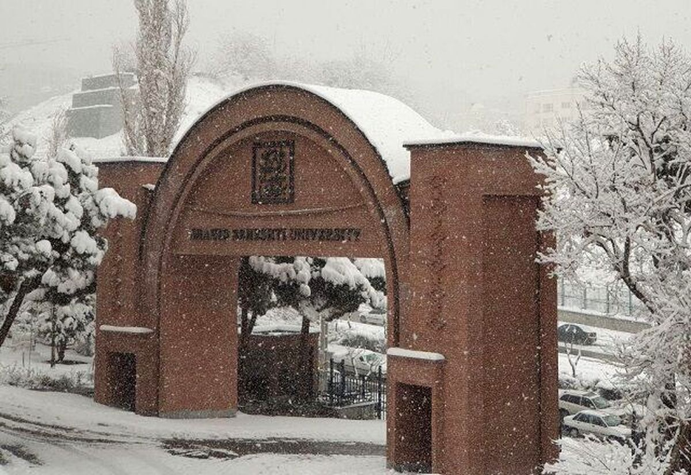

دانشگاه صنعتی شریف
دانشگاه صنعتی شریف که تا پیش از انقلاب ۱۳۵۷ با نام دانشگاه صنعتی آریامهر شناخته میشد، یک دانشگاه صنعتی دولتی در ایران است. دانشگاه صنعتی شریف در محله طرشت تهران در نزدیکی میدان آزادی واقع شده و پردیسی نیز در جزیره کیش واقع در خلیج فارس دارد. این دانشگاه محل تحصیل تعداد قابل توجهی از بهترین دانشجویان ایرانی است
rank: 10/10
دانشگاه تهران
دانشگاه تهران، یک دانشگاه دولتی و یکی از بزرگترین مراکز آموزش عالی در ایران است. از این دانشگاه با القاب «دانشگاه مادر» و «نماد آموزش عالی» یاد شدهاست. پیشنهاد اولیهٔ ساخت دانشگاه را اسماعیل سنگ در سال ۱۳۰۵ داد و پس از انجام مطالعات اولیهٔ عیسی صدیق، در سال ۱۳۱۳، دانشگاه تهران به دستور رضاشاه تأسیس شد
rank: 9/10
دانشگاه امیر کبیر
دانشگاه صنعتی امیرکبیر، یکی از دانشگاههای صنعتی و برتر در ایران است که در شهر تهران مستقر میباشد. این دانشگاه فعالیت خود را در سال ۱۳۳۷، تحت عنوان پلیتکنیک تهران آغاز نمود و سپس به دانشگاه صنعتی امیرکبیر ارتقا یافت
rank: 8/10
دانشگاه علم و صنعت
«دانشگاه علم و صنعت ایران» دانشگاهی صنعتی دولتی است که هسته اولیۀ آن، در سال ۱۳۰۸ به هنگام سلطنت رضاشاه و با مساحت ۴۲ هکتار، در موقعیت شمالشرق تهران بنا شد. پردیس اصلی دانشگاه علم و صنعت در شهر تهران و شعبههای آن در بهشهر، دماوند و شهرضا قرار گرفتهاند
rank: 7/10
دانشگاه خواجه نصیر
دانشگاه صنعتی خواجه نصیرالدین طوسی یکی از دانشگاههای برتر دولتی شهر تهران و نخستین دانشگاه صنعتی ایران میباشد. هسته اولیه این دانشگاه به سال ۱۳۰۷ برمیگردد که با تصویب شورای انقلاب فرهنگی این دانشگاه در سال ۱۳۵۹ با ادغام ۹ مرکز آموزش عالی (مؤسسه عالی تکنیکوم نفیسی (مؤسس مهندس حبیب نفیسی)، مدرسه عالی فنی، دانشکده نقشهبرداری، مؤسسه آبشناسی، دانشکده هواشناسی و علوم جو، دانشکده مخابرات، مدرسه عالی ساختمان، دانشگاه کار و پیشه، تربیت دبیر فنی پلی تکنیک تهران، دانشگاه علوم و فنون مجتمع آموزشی وزارت راه، مجتمع تکنولوژی تهران و مدرسه عالی تلویزیون و سینما) به شکل کنونی و با نام دانشگاه فنی و مهندسی تشکیل شد و در سال ۱۳۶۷ به نام خواجه نصیرالدین طوسی، دانشمند ایرانی تغییر نام داد
rank: 6/10
دانشگاه شیراز
دانشگاه صنعتی شیراز دومین دانشگاه دولتی در استان فارس است و در اردیبهشت ماه سال ۱۳۸۳ توسط وزیر علوم تحقیقات و فناوری دولت وقت، جعفر توفیقی گشایش یافت. این دانشگاه در بلوار مدرس در شرق شهر شیراز واقع است و محوطه جدید آن واقع در شهر جدید صدرا در شمال غرب شیراز هماکنون در حال ساخت است.
rank: 5/10
دانشگاه فردوسی مشهد
دانشگاه فردوسی مشهد از دانشگاههای دولتی و زیرمجموعه وزارت علوم، تحقیقات و فناوری ایران است که بر اساس نام حکیم ابوالقاسم فردوسی، شاعر و حماسهسرای ایرانی نامگذاری شدهاست. این دانشگاه که پیشنهاد بنیانگذاری آن به پیش از دهه بیست خورشیدی برمیگردد، سومین دانشگاه بنیان گذاشته شده در ایران بهشمار میآید که در سال ۱۳۹۸ جشن هفتادسالگی خود را برگزار کرد. دانشگاه فردوسی مشهد در زمان پهلوی از نظر علمی و آکادمیک زیر نظر دانشگاه جرجتاون قرار داشت. دانشگاه فردوسی مشهد با دارا بودن ۱۳ دانشکده، ۸ پژوهشکده. بیش از ۲۵۰۰۰ دانشجوی داخلی و بینالمللی و ۸۱۴ عضو هیئت علمی، به عنوان یکی از بزرگترین دانشگاههای ایران و قطب علمی شرق کشور محسوب میگردد.
rank: 4/10
دانشگاه شهید بهشتی
دانشگاه شهید بهشتی با نام پیشین دانشگاه ملی ایران، یکی از دانشگاههای دولتی ایران است که در سال ۱۳۳۸ در منطقهٔ اوین، غرب ولنجک و شرق درکه در شمال غربی شهر تهران تأسیس شد و در زمینی با مساحتی حدود ۷۰ هکتار واقع شدهاست. دانشگاه شهید بهشتی دارای ۱۹ دانشکده، ۳ پردیس و ۱۶ پژوهشکده و مرکز مطالعاتی و تحقیقاتی است.
rank: 3/10